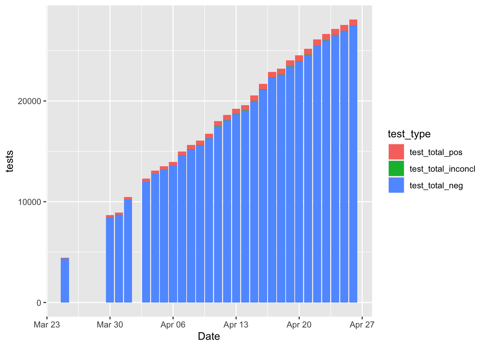
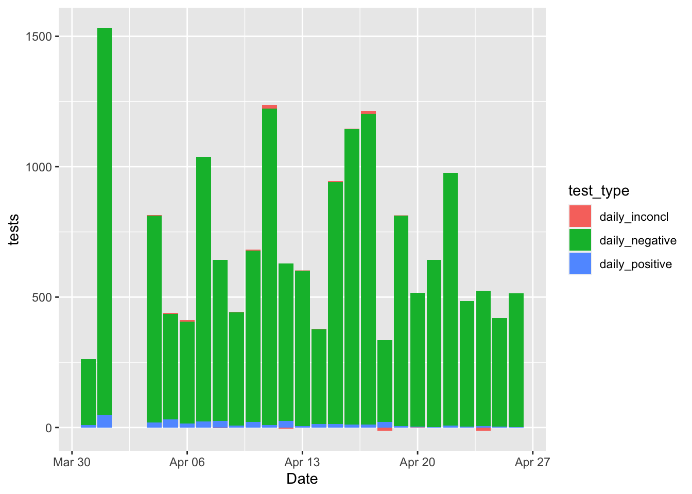
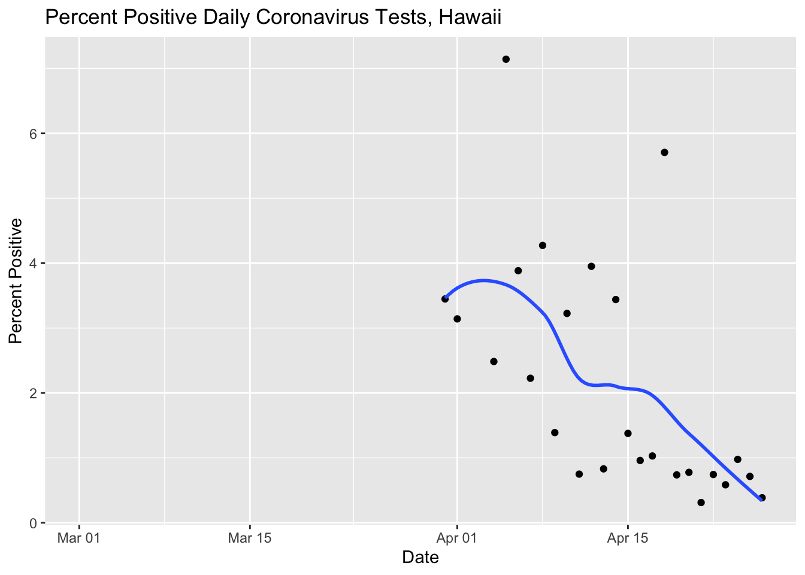
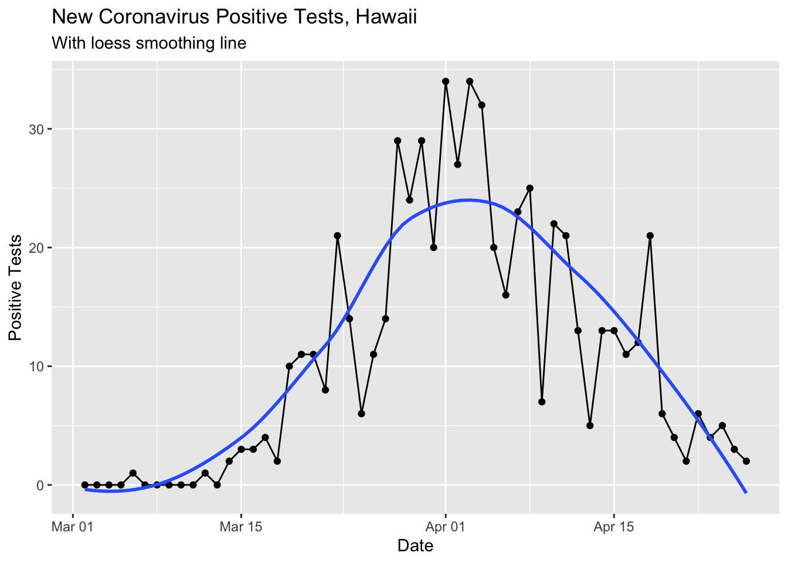
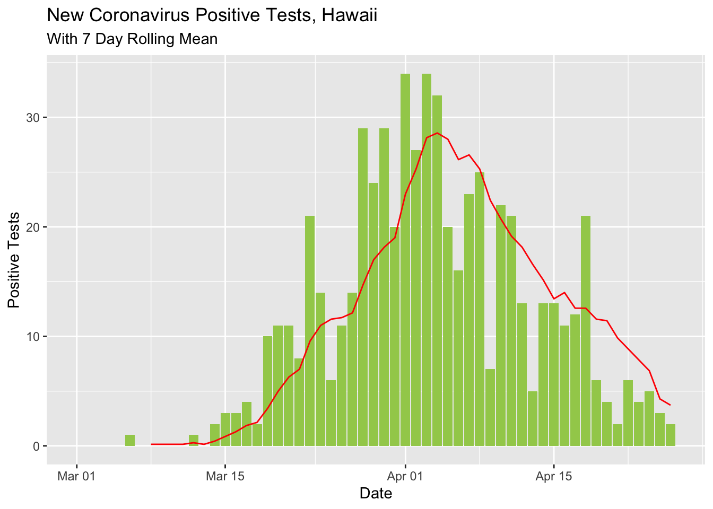
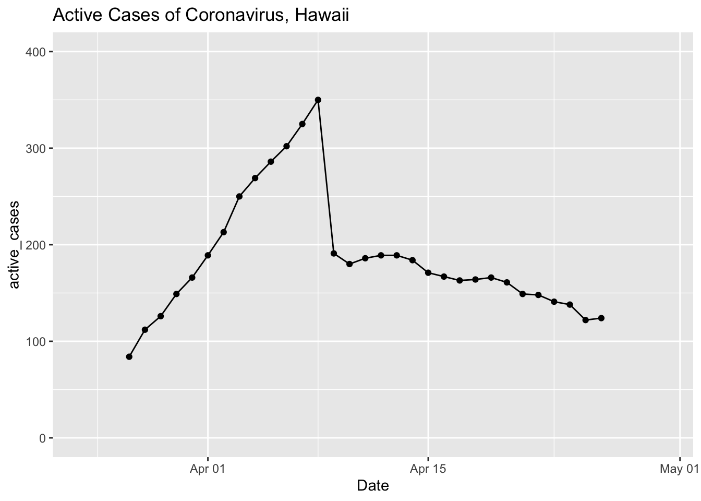

Today I decided to look at the tests for coronavirus that are being done in Hawaii. It looks like the number of positive tests are slowing down. I had a sense that the population is also probably healthier from social distancing, so I wanted to look at the trend in tests and positive tests.
library(dplyr)##
## Attaching package: 'dplyr'## The following objects are masked from 'package:stats':
##
## filter, lag## The following objects are masked from 'package:base':
##
## intersect, setdiff, setequal, unionlibrary(ggplot2)
library(lubridate)##
## Attaching package: 'lubridate'## The following object is masked from 'package:base':
##
## datelibrary(scales)
library(tidyr)
library(zoo)##
## Attaching package: 'zoo'## The following objects are masked from 'package:base':
##
## as.Date, as.Date.numericcovid <- readr::read_csv('https://covid19-hawaii.herokuapp.com/hawaii_daily.sqlite/hawaii_daily?_format=csv&_size=max')## Parsed with column specification:
## cols(
## .default = col_double(),
## Date = col_character(),
## `Total Tests` = col_number(),
## `Daily Tests` = col_number(),
## `Total Private Tests` = col_number(),
## `Negative Tests` = col_number(),
## `OHCA Licensed Beds` = col_number(),
## `Non-ICU Beds` = col_number(),
## Source = col_character(),
## `Unnamed: 40` = col_character(),
## `Unnamed: 41` = col_logical(),
## `Unnamed: 42` = col_logical(),
## `Unnamed: 43` = col_logical(),
## `Unnamed: 44` = col_logical(),
## `Unnamed: 45` = col_logical(),
## `Unnamed: 46` = col_logical(),
## `Unnamed: 47` = col_logical(),
## `Unnamed: 48` = col_logical(),
## `Unnamed: 49` = col_logical(),
## `Unnamed: 50` = col_logical(),
## `Unnamed: 51` = col_logical()
## # ... with 4 more columns
## )## See spec(...) for full column specifications.timestamp() # Data pull time## ##------ Sun Apr 26 16:46:26 2020 ------##covid$Date <- mdy(covid$Date)
covid %>% select(Date, test_total = `Total Tests`, test_daily = `Daily Tests`,
test_total_neg = `Negative Tests`, test_total_pos = `Positive Tests`,
test_total_inconcl = `Inconcl Tests`) %>%
mutate(daily_positive = test_total_pos - lag(test_total_pos),
daily_negative = test_total_neg - lag(test_total_neg),
daily_inconcl = test_total_inconcl - lag(test_total_inconcl)) %>%
select(Date, test_daily, daily_positive, daily_negative, daily_inconcl)## # A tibble: 57 x 5
## Date test_daily daily_positive daily_negative daily_inconcl
## <date> <dbl> <dbl> <dbl> <dbl>
## 1 2020-03-01 NA NA NA NA
## 2 2020-03-02 NA NA NA NA
## 3 2020-03-03 NA NA NA NA
## 4 2020-03-04 NA NA NA NA
## 5 2020-03-05 NA NA NA NA
## 6 2020-03-06 NA NA NA NA
## 7 2020-03-07 NA NA NA NA
## 8 2020-03-08 NA NA NA NA
## 9 2020-03-09 NA NA NA NA
## 10 2020-03-10 NA NA NA NA
## # … with 47 more rowsLooking at the data there seems to be a typo for the total negative tests on 4/23. It went down compared to the prior day and the positive, negative, and inconclusive tests columns add up to 1000 less than the total test column for that day. I’ll just clean it for the purposes of this illustration.
covid_edit <- covid %>% select(Date, test_total = `Total Tests`,
test_daily = `Daily Tests`,
test_total_neg = `Negative Tests`,
test_total_pos = `Positive Tests`,
test_total_inconcl = `Inconcl Tests`)
covid_edit$test_total_neg[which(covid_edit$Date == "2020-04-23")] <- 26017Here’s the curve that we often see on cumulative positive and negative tests.
# This block uses two new functions to me, starts_with() and pivot_longer(), which is like gather but with different syntax
covid_edit %>% select(Date, test_total_neg, test_total_pos, test_total_inconcl) %>%
pivot_longer(starts_with("test"), names_to = "test_type",
values_to = "tests") %>%
mutate(test_type = factor(test_type, levels = c("test_total_pos",
"test_total_inconcl",
"test_total_neg"))) %>%
ggplot(aes(x = Date, y = tests, fill = test_type)) + geom_bar(stat = "identity")## Warning: Removed 92 rows containing missing values (position_stack).
It might be nice to see the positive tests per day compared to the negative tests, inconclusive, etc.
covid_edit %>%
mutate(daily_positive = test_total_pos - lag(test_total_pos),
daily_negative = test_total_neg - lag(test_total_neg),
daily_inconcl = test_total_inconcl - lag(test_total_inconcl)) %>%
select(Date, starts_with("daily")) %>%
pivot_longer(cols = starts_with("daily"), names_to = "test_type",
values_to = "tests") %>%
ggplot(aes(x = Date, y = tests, fill = test_type)) + geom_bar(stat = "identity")## Warning: Removed 102 rows containing missing values (position_stack).
Oh man, what a mess! It’s impossible to see the positives because they are so small as a percentage of the total tests! A better idea might be just to plot the percentage positive anyway.
covid_edit %>%
mutate(daily_positive = test_total_pos - lag(test_total_pos),
daily_negative = test_total_neg - lag(test_total_neg),
daily_inconcl = test_total_inconcl - lag(test_total_inconcl)) %>%
select(Date, test_daily, daily_positive) %>%
mutate(daily_positive_percentage = daily_positive/test_daily * 100) %>%
ggplot(aes(x = Date, y = daily_positive_percentage)) +
geom_point() +
geom_smooth(se = F) +
ggtitle("Percent Positive Daily Coronavirus Tests, Hawaii") +
ylab("Percent Positive")## `geom_smooth()` using method = 'loess' and formula 'y ~ x'## Warning: Removed 32 rows containing non-finite values (stat_smooth).## Warning: Removed 32 rows containing missing values (geom_point).
That’s a lot better. We can see that the percentage of positive tests is going down as the total number of cases also declines.
Running Previous Curves
Here I updated all the other coronavirus curves for 4/26/2020.
covid %>% filter(!is.na(`New Cases`)) %>%
ggplot(aes(x = Date, y = `New Cases`)) +
geom_point() +
geom_line() +
geom_smooth(se = F) +
labs(title ="New Coronavirus Positive Tests, Hawaii",
subtitle = "With loess smoothing line") +
ylab("Positive Tests")## `geom_smooth()` using method = 'loess' and formula 'y ~ x'
This loess smoothed curve is a little silly now that the cases are so low since the smoothing makes the curve dip below 0.
I updated the rolling mean curve to look a little nicer and show the difference between the day’s count and the rolling mean with different shapes.
covid %>% select(Date, `New Cases`) %>%
mutate(rolling_mean_7d = rollmean(`New Cases`, 7, align = 'right', fill = NA)) %>%
mutate(newcases = `New Cases`) %>%
select(Date, newcases, rolling_mean_7d) %>%
ggplot(aes(x = Date)) +
geom_bar(aes(y = newcases), stat = 'identity', color = 'dark blue', fill = 'white') +
geom_line(aes(y = rolling_mean_7d), color = 'red') +
labs(title ="New Coronavirus Positive Tests, Hawaii",
subtitle = "With 7 Day Rolling Mean") +
ylab("Positive Tests")## Warning: Removed 1 rows containing missing values (position_stack).## Warning: Removed 7 row(s) containing missing values (geom_path).
covid %>%
select(Date, total_cases = `Total Cases`, total_released = `Total Released`) %>%
mutate(active_cases = total_cases - total_released) %>%
# gather(total_cases, total_released, key = "case_type", value = "cases") %>%
ggplot(aes(x = Date, y = active_cases)) +
geom_point() +
geom_line() +
ylim(0, 400) + xlim(ymd('2020-03-24'), ymd('2020-04-30')) +
ggtitle("Active Cases of Coronavirus, Hawaii")## Warning: Removed 26 rows containing missing values (geom_point).## Warning: Removed 26 row(s) containing missing values (geom_path).
License
I didn’t mention it last time, but these data are subject to the following license:
Data license: Creative Commons Attribution 4.0 International · Data source: Community Maintained Daily Hawaii COVID-19 Metrics · About: This is a community maintained, unofficial table of COVID-19 stats compiled from DOH and media reports. Accuracy is not guaranteed. Please see the Data source link to report any errors.